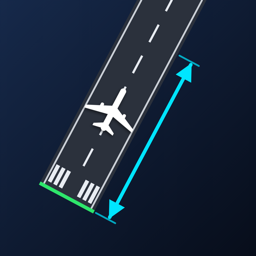

Runway Distance
Measure distances on airport chart screenshots
Runway Distance is a free iPad app for pilots. Import a screenshot of an airport chart, let the app find its scale bar, then place two points, for example the runway threshold and an exit, and read the distance in meters or feet. Every result comes with an honest ± range.
Planning aid only. Not for navigation, not certified or approved by any aviation authority, and not an electronic flight bag (EFB) application. Verify every value against official sources.